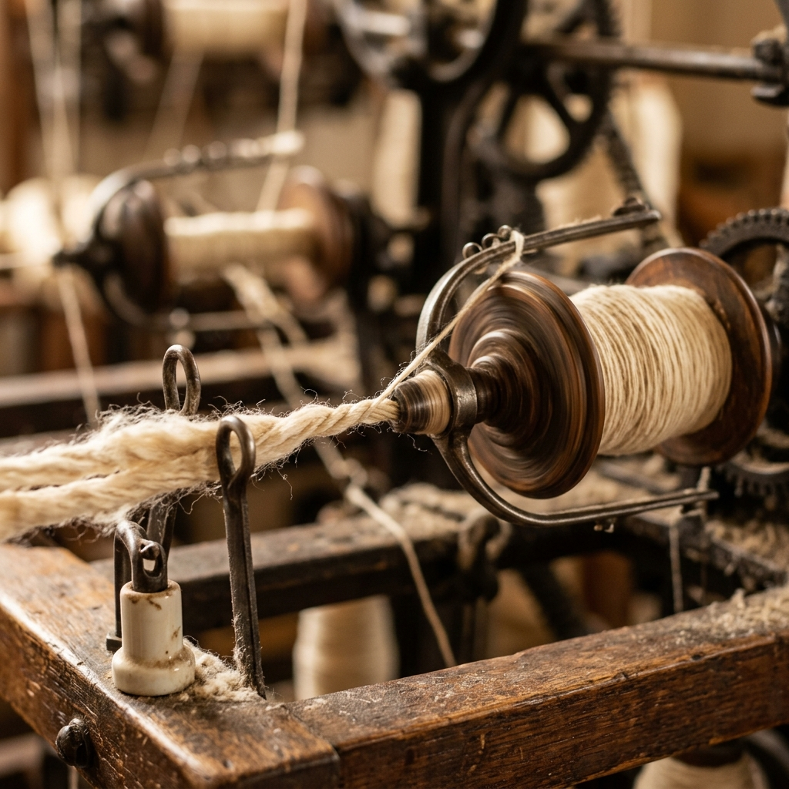
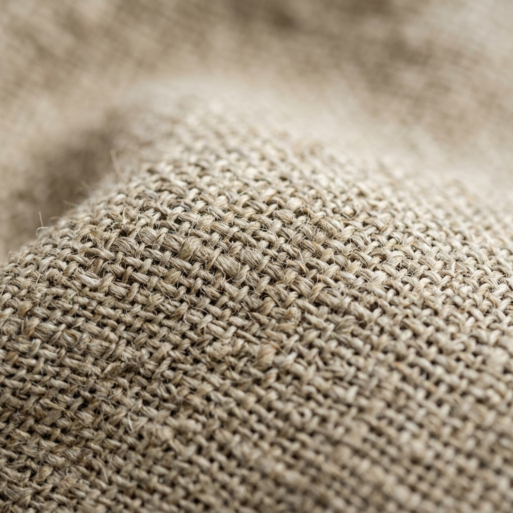

Optimizing the thread from fiber to yarn.
Md. Masum Billah, a textile engineer from Naogaon, Bangladesh, dedicated to yarn manufacturing, spinning mill efficiency, and advanced quality testing.
Message on WhatsApp →Md. Masum Billah, a textile engineer from Naogaon, Bangladesh, dedicated to yarn manufacturing, spinning mill efficiency, and advanced quality testing.
Message on WhatsApp →
Feel free to reach out for spinning mill production management, quality control roles, or technical collaborations.
Familiar with state-of-the-art testing machines and standard operating procedures (ISO, ASTM, AATCC) to ensure yarn quality:
| Machine / Test | Standard | Core Parameters |
|---|---|---|
| Uster Tester 5 / 6 | ASTM D1425 | Evenness (CV%), Hairiness (H), Imperfections (IPI) |
| Single Yarn Strength | ISO 2062 | Tensile Strength, Elongation%, RKM |
| Twist & Count Testing | ISO 2061 | Twist per Inch (TPI), Count (Ne/Tex) |
| Micronaire Test | ASTM D1448 | Fiber Fineness & Maturity assessment |
Specialized academic foundation in Yarn Engineering, focusing on the mechanics of fiber processing: carding, combing, drafting, and spinning. Experienced in Ring Spinning and Rotor Spinning systems, with a passion for optimizing yarn count, strength, and hairiness metrics.
Completing BSc in Textile Engineering at Barishal Textile Engineering College. Deep understanding of spinning systems, textile physics, and fabric manufacturing.
